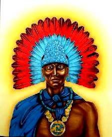
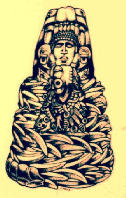

Instituto de Pesquisas Psíquicas Imagick O Dharma de Muitas Faces
 por: Julio Cesar Guerrero Olá...Gostaria de partilhar alguns trechos de um material excelente que tenho estudado.
São trechos do pensamento de um Nagual chamado D. Miguel, um iniciado no saber dos Toltecas.
O ocidente ficou conhecendo o saber dos Toltecas via Castañeda e seus livros e alguns até pensam que ele é o único a falar sobre o tema.
Na realidade existem muitos herdeiros do saber tolteca hoje em atividade e D. Miguel, iniciado por via materna, é um médico que num primeiro momento tenta se afastar de sua herança espiritual mas volta ao saber de seus antepassados e tem então publicado muita coisa.Envio estes textos por considerá-los muito dharmicos, mostrando, a meu ver, que o Dharma se revelou a diferentes povos em diferentes momentos.
Paz profunda
Guerrero
D.M. - Não enxergamos a verdade porque somos cegos. O que nos cega são as crenças falsas que temos em nossas mentes. Temos a necessidade de estar certos e de tornar os outros errados. Confiamos no que acreditamos, e nossas crenças nos predispõem ao sofrimento. É como se vivêssemos no meio de um nevoeiro que não permite enxergar um palmo além do nariz. Vivemos num nevoeiro que nem ao menos é real. Esse nevoeiro é um sonho, seu sonho pessoal da vida – aquilo que você acredita, todos os conceitos que possui sobre quem você é, todos os compromisso que assumiu com os outros, com você mesmo e até com Deus.
D.M. - Toda a sua mente é um nevoeiro que os toltecas chamam de mitote. Sua mente é um sonho em que mil pessoas conversam ao mesmo tempo, e ninguém entende o outro. Essa é a condição da mente humana – um grande mitote, e com esse grande mitote você não consegue enxergar o que realmente é. Na Índia eles chamam o mitote de maya, o que significa "ilusão". É a noção pessoal do "eu sou". Tudo em que você acredita sobre si mesmo, sobre o mundo, todos os conceitos e programa que você tem na mente, todos formam o mitote. Não conseguimos ver quem realmente somos; não conseguimos perceber que não somos livres.
Por isso, os seres humanos resistem à vida. Estar vivo é o maior medo que os homens possuem. A morte não é o maior medo que temos; nosso maior medo é assumir o risco de estar vivo – o risco de estar vivo e expressar o que somos na realidade. Simplesmente sermos nós mesmos é o maior medo dos seres humanos. Aprendemos a viver nossa vida tentando satisfazer as exigências de outras pessoas. Aprendemos a viver pelos pontos de vista de outras pessoas, por causa do medo de não sermos aceito e de não sermos bons o suficiente para outras pessoas.
D.M. - Durante o processo da domesticação, formamos uma imagem do que é a perfeição para tentarmos ser bons o suficiente. Criamos uma imagem de como devemos ser para sermos aceitos por todos. Especialmente tentamos agradar aos que nos amam, como mamãe e papai, irmãos e irmãs maiores, os sacerdotes e os professores. Tentando ser bons para eles, criamos uma imagem de perfeição, mas não nos encaixamos nessa imagem. Criamos essa imagem, mas essa imagem não é real. Nunca iremos ser perfeitos sob este ponto de vista. Nunca!
Não sendo perfeitos, rejeitamos a nós mesmos. E o nível de auto-rejeição depende de quão efetivos foram os adultos ao quebrar nossa integridade. Depois da domesticação, não se trata mais de sermos bons o suficiente para as outras pessoas. Não podemos perdoar a nós mesmos por não sermos o que desejamos ser, ou melhor, o que acreditamos que desejamos ser. Não podemos perdoar a nós mesmos por não sermos perfeitos.
Nuvem que passa
Nota do webmaster:
Os Toltecas.
A capital Tolteca foi fundada no estado mexicano de Hidalgo. Nos primeiros tempos, possivelmente entre os anos 800 - 900 de nossa era, se inicia a chamada Tula Chico com uma base pluriétnica.
Entre os anos 900-950, é fundado o centro de Tula Grande, a 1,5 quilômetros, ao sudeste do centro anterior. Ao final deste período se abandona Tula Chico e a população se transfere para o núcleo de Tula Grande, levantado num promontório sobre dos vales aluviais. Parece que em seu momento de apogeu (Fase Tollan, 950 a 1.150), a cidade pode conter uns 50.000 habitantes.
Depois deste período se inicia uma fase de decadência, que acaba com o colapso da cidade, mais ou menos por volta de 1.150. Muitos edifícios do centro foram destruídos y queimados.
Sus edifícios más característicos são a Pirâmide B y o Palácio Queimado. Se usam colunas e pilastras, gigantes para sustentar altares monolíticos e umas esculturas tridimensionais características denominadas chacmol.
Tradicionalmente, se ha sugerido, dadas as correspondências artísticas e culturais com os Mayas Itzaes de Chichén Itzá, cidade do norte de Yucatán que os Toltecas em sua expansão conquistaram esta cidade y ali criaram outra Tula. Devo dizer que sou mais partidário da hipótese contrária, quer dizer, que os Toltecas eram na realidade Mayas (os clamados Putunes), que quiseram emular enm Hidalgo, sem conseguir plenamente, a magnificência alcançada em Chichén Itzá, em edifícios como o Castillo, o Templo dos Guerreiros, etc. Inclusive, pode ser possível que em vez de fluxo de homens em qualquer dos sentidos, o que realmente se deu foi um fluxo de idéias que levou à imitação de padrões por razões políticas. Ainda que, para os mexicanos o aztecas, la mitológica Tollan, fonte do poder, não fosse outra que não a Tula hidalguense.

Conheça o
IMAGICKLAN
A Irmandade das Estrelas
O local onde os bruxos conspiram...
Clicke aqui para receber informações
Volta Índice da Tribo


Instituto de Pesquisas Psíquicas Imagick
tel: 0xx.11.3813.4123